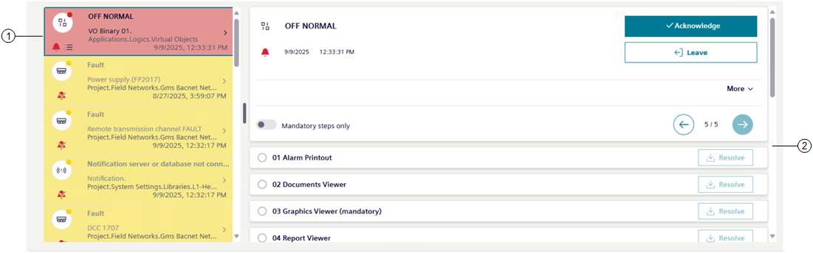
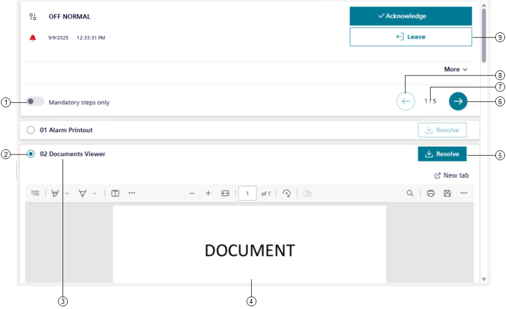

Assisted Treatment
When you start assisted treatment, the screen displays event handling with the operating procedure steps that you must carry out available in the event details area.
For instructions, see Handling an Event with Assisted Treatment.

1 | Event selected for assisted treatment |
2 | Event details, including procedure steps |
Operating Procedures Steps
When you initiate assisted treatment, the event details area on the right lists the steps of the guided procedure you must follow to handle the event. You can scroll the list to select and carry out the steps in the correct sequence, which depends on how a procedure was configured. Additionally, depending on configuration, a step can be:
- Automatic or manual
- Mandatory or optional
- Repeatable or not repeatable

1 | Switch on to view only required steps. | ||
2 | Graphically indicates the execution status of the step. | ||
Unselected step | Selected step | Meaning | |
| | The step is in progress. | |
| | The step is in progress, but with errors. | |
| | The step is resolved successfully. | |
| | The step is resolved, but with errors. A notification bottom right of the screen tells you the reason why the step failed. | |
3 | Briefly describes the step type. | ||
4 | Content related to the currently selected step in the procedure. | ||
5 | It allows checking off the current step and go to the next one. This button remains enabled for steps configured as repeatable. | ||
6 | Go to the next step. | ||
7 | Steps numbering: [step identification number]/[total number of procedural steps]. | ||
8 | Go to the previous step. | ||
9 | Exit assisted treatment. | ||
- You must execute the first mandatory step before the following mandatory steps can be selected and executed.
- Whether the steps must be executed sequentially or may instead be freely executed in any order depends on how the assisted-procedure was configured.
- If a step cannot be handled from Flex Client, a message informs you that the step is not supported () and you must handle it from a Desigo CC installed client or Windows app client (ClickOnce application).
Assisted Treatment License and Access Rights
Assisted treatment is covered by a license. If assisted treatment is not available, you can use the other event-handling methods provided by the system (fast treatment and investigative treatment). If the license is installed but later expires or is lost for any reason, assisted treatment is available only for those events that were already undergoing assisted treatment, and that have an associated operating procedure. If a new event occurs, fast treatment and investigative treatment will remain available. In addition to the license, the availability of assisted treatment depends:
- On your user group rights. If you have no appropriate access permission, you cannot initiate assisted treatment.
- On the system configuration (that is, on whether an assisted procedure has been configured for handling a specific type of event). If there is no such procedure configured, investigative treatment is available instead.